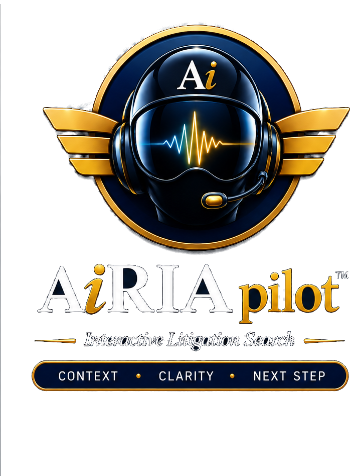
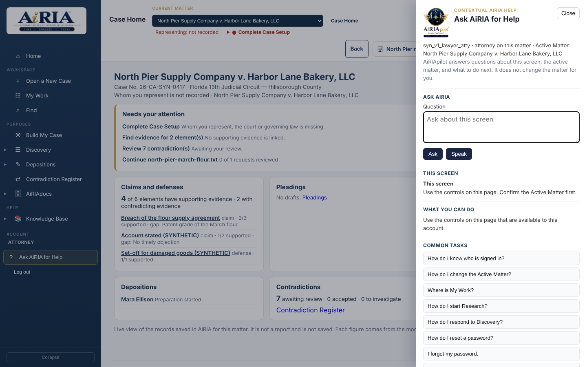

Matter-wide interaction
Search and investigate across the matter’s evidentiary record rather than hopping between disconnected tools.
 Consult with an AiRIA Expert
Consult with an AiRIA ExpertWithin the AiRIA platform
Know where you are. Know what comes next.
AiRIApilot stays with you as you work through the matter. Ask what a screen is showing, where to find a function or how to approach the next step. Its guidance follows the current workspace, so help stays close to the task rather than in a separate manual.

One platform · integrated capability
AiRIApilot helps attorneys and teams understand the current screen, ask practical questions and follow the matter’s investigative trail. Context travels with the work, so guidance remains useful as the task changes.
Search and investigate across the matter’s evidentiary record rather than hopping between disconnected tools.
Pursue the questions that matter and surface relationships that help the team see the case more clearly.
Every useful result is meant to lead back to the underlying evidence so verification stays practical.
Interactive search accelerates investigation. Material legal judgment remains with the lawyers directing the matter.
Verification first
Litigation search is only useful when the team can confirm what was found, why it matters, and where it came from. AiRIApilot is designed for that loop—interact, investigate, verify—inside AiRIA’s governed workspace.
Move between evidence, case development, discovery and witness preparation with guidance available in context. Ask a practical question, understand what AiRIA is showing and choose the next step.
Explore the AiRIA platform →Type or speak a question while working through the case: “What does this screen show?”, “How do I attach this evidence?” or “What should I review before preparing this witness?” AiRIApilot helps explain the task and the next step. Keep the guidance alongside the record, with the lawyer directing the work.

Private demonstrations now available
See one matter from evidence to work product. Ask for a demonstration of Find, Build My Case, Discovery, Depositions, Pleadings and AiRIAdocs. Follow a source through the workflow and see how the team’s work stays connected.
Consult with an AiRIA Expert